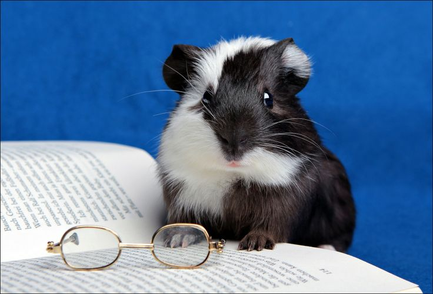

About Shy Guinea Pig Blind Books

Shy Guinea Pig Blind Books was created for readers who love surprises, and exploring something new. Our bookstore specializes in carefully selected books wrapped in beautiful packaging with only a few clues to guide your choice.
The idea behind our store comes from the curiosity of a guinea pig exploring a new environment. Just like our mascot, readers can take their time and follow their curiosity to discover hidden treasures one page at a time.
Our Story
Many readers have experienced the challenge of choosing their next book. Popular titles and familiar authors can sometimes make it difficult to discover unexpected stories. Shy Guinea Pig Blind Books removes the pressure of choosing and replaces it with a fun mystery experience.
Each wrapped book is selected with care and includes clues about the genre, themes, and reading experience. Our goal is to create a welcoming place where everyone can find a story that feels like a special discovery.
Meet Our Mascot
The shy guinea pig represents curiosity, kindness, and taking small steps toward new adventures. Although guinea pigs can be quiet creatures, they are also playful explorers, which makes them the perfect symbol for a bookstore built around discovering hidden stories.
At Shy Guinea Pig Blind Books, we believe every reader deserves the chance to find a book that surprises them.